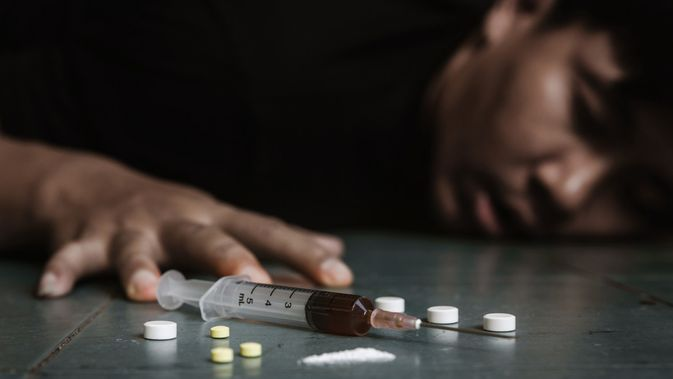

Pengertian Narkoba
Narkoba adalah singkatan dari Narkotika, Psikotropika, dan Bahan Adiktif lainnya yang berbahaya bagi kesehatan fisik dan mental manusia.
Narkoba adalah bahan atau zat yang bisa menyebabkan ketergantungan (adiksi) pada penggunanya, baik secara fisik maupun psikologis. Penyalahgunaan narkoba dapat memengaruhi seluruh aspek kehidupan seseorang, termasuk kehidupan sosial, ekonomi, dan hubungan keluarga.
Secara umum, narkoba dibagi menjadi dua kategori besar:
Narkotika (seperti ganja, heroin, kokain) yang mengubah persepsi, suasana hati, dan tingkah laku, serta Psikotropika (seperti ekstasi, LSD) yang menyebabkan perubahan dalam pola pikir dan emosi pengguna.
Penyalahgunaan narkoba dapat dimulai dengan penggunaan yang tampaknya tidak berbahaya, tetapi jika berlanjut, dapat mengarah pada ketergantungan. Zat-zat ini bekerja dengan mengubah cara kerja sistem saraf pusat, memengaruhi cara otak dan tubuh merespons rangsangan.
Penyalahgunaan narkoba juga mencakup pengambilan obat resep secara tidak sah. Misalnya, obat pereda nyeri seperti opioid yang disalahgunakan untuk efek euforia.
Selain itu, zat-zat seperti alkohol dan tembakau juga termasuk dalam kategori bahan adiktif yang berisiko tinggi.

Artikel Tentang Narkoba
Penyebab Penyalahgunaan Narkoba
Penyalahgunaan narkoba tidak hanya terjadi karena faktor individu, tetapi juga pengaruh dari lingkungan sosial. Beberapa faktor penyebab utama penyalahgunaan narkoba antara lain:
- Faktor Psikologis: Banyak orang yang terjerumus ke dalam dunia narkoba karena mereka merasa tertekan secara emosional. Stres, depresi, dan kecemasan adalah alasan umum mengapa seseorang beralih ke narkoba sebagai pelarian. Bagi sebagian orang, penggunaan narkoba dapat memberikan "pelarian" dari masalah yang mereka hadapi.
- Tekanan Sosial: Remaja dan orang muda sering kali merasa tertekan untuk mengikuti teman sebaya mereka. Mereka mungkin merasa bahwa menggunakan narkoba adalah cara untuk diterima dalam kelompok sosial atau merasa lebih percaya diri dalam pergaulan.
- Faktor Budaya: Dalam beberapa budaya atau lingkungan sosial, penyalahgunaan narkoba bisa diterima atau bahkan dianggap sebagai hal yang biasa, seperti dalam beberapa acara sosial atau pesta.Media yang mengglorifikasi penggunaan narkoba, seperti dalam film atau musik, dapat memengaruhi persepsi seseorang tentang narkoba.
- Pengaruh Keluarga: Keluarga yang tidak stabil atau orang tua yang tidak memberi perhatian penuh dapat menjadi faktor yang mendorong seseorang untuk menggunakan narkoba. Keluarga yang sering terlibat dalam perilaku negatif seperti kekerasan rumah tangga atau pengabaian cenderung melahirkan generasi yang terlibat dalam penggunaan narkoba.
- Faktor Ekonomi: Kondisi keuangan yang sulit atau kemiskinan bisa memengaruhi keputusan seseorang untuk mencari "cara cepat" untuk mendapatkan uang, yang sering melibatkan narkoba. Pengguna narkoba seringkali terjebak dalam peredaran gelap narkoba untuk mendukung kebiasaan mereka.
- Faktor Lingkungan: Keberadaan narkoba yang mudah diakses di suatu wilayah atau lingkungan juga meningkatkan risiko penyalahgunaan. Daerah dengan tingkat kriminalitas yang tinggi cenderung memiliki jaringan distribusi narkoba yang lebih luas, yang mempermudah akses bagi orang-orang yang rentan.
- Faktor Individu:Beberapa orang mungkin mencoba narkoba untuk mencari sensasi atau kenikmatan sesaat, seperti euforia atau perasaan bebas dari stres. Sementara itu, individu yang mengalami gangguan mental, seperti depresi atau kecemasan, seringkali mencari pelarian melalui penggunaan narkoba. Rasa penasaran, terutama di kalangan remaja, juga menjadi faktor yang mendorong mereka untuk mencoba narkoba, terkadang untuk menunjukkan keberanian atau untuk merasa diterima dalam kelompok. Namun, penggunaan narkoba dalam jangka panjang dapat menyebabkan ketergantungan fisik, di mana tubuh merasa membutuhkan narkoba untuk berfungsi normal, menjadikannya semakin sulit untuk berhenti.
- Biologis Dan Genetik: Ada bukti yang menunjukkan bahwa seseorang yang memiliki riwayat keluarga dengan ketergantungan narkoba mungkin lebih rentan untuk mengalami hal yang sama. Perubahan Otak: Narkoba dapat memengaruhi cara kerja otak dan sistem saraf, yang dapat memengaruhi pengambilan keputusan dan kemampuan seseorang untuk menahan diri.
Semua faktor ini berinteraksi satu sama lain, menciptakan situasi di mana seseorang merasa bahwa penggunaan narkoba adalah pilihan yang mereka miliki untuk mengatasi masalah mereka. Namun, kenyataannya, narkoba hanya memperburuk keadaan dan memicu lebih banyak masalah dalam jangka panjang.
Peran Keluarga dalam Pencegahan Penyalahgunaan Narkoba
Keluarga adalah faktor yang sangat penting dalam mencegah penyalahgunaan narkoba. Orang tua yang peduli dan terlibat dapat memberikan pengaruh positif pada anak-anak mereka dan mencegah mereka jatuh ke dalam penyalahgunaan narkoba. Beberapa langkah yang dapat dilakukan keluarga antara lain:
- Membangun Komunikasi yang Terbuka: Anak-anak dan remaja yang merasa dapat berbicara dengan orang tua mereka tentang masalah pribadi lebih kecil kemungkinannya untuk mencoba narkoba. Orang tua perlu menciptakan suasana di rumah yang terbuka untuk diskusi dan berbagi perasaan.
- Pendidikan yang Tepat: Memberikan pengetahuan yang akurat dan jelas tentang bahaya narkoba sangat penting untuk membekali anak-anak dengan informasi yang benar. Ini bisa dilakukan melalui pembicaraan langsung, materi edukasi, atau bahkan kegiatan komunitas yang mengangkat isu narkoba.
- Menjadi Teladan yang Baik: Orang tua harus memberikan contoh yang baik dengan menghindari penggunaan narkoba atau alkohol di depan anak-anak mereka. Anak-anak cenderung meniru perilaku orang tua mereka, jadi sangat penting bagi orang tua untuk menunjukkan pola hidup yang sehat.
- Menjaga Kedekatan dengan Anak: Keluarga yang solid, dengan ikatan emosional yang kuat, lebih mampu melindungi anak-anak mereka dari pengaruh buruk. Anak-anak yang merasa dicintai dan dihargai memiliki kecenderungan yang lebih rendah untuk mencari pelarian melalui narkoba.
Dengan menciptakan lingkungan yang penuh kasih sayang dan dukungan, keluarga dapat berperan besar dalam melindungi anggota mereka dari bahaya narkoba.
Dampak Buruk Penyalahgunaan Narkoba
Penyalahgunaan narkoba tidak hanya merusak kesehatan fisik, tetapi juga menghancurkan mental, sosial, dan ekonomi seseorang. Dampak buruk narkoba bisa berlangsung lama, bahkan setelah seseorang berhenti menggunakannya. Berikut adalah beberapa dampak utama dari penyalahgunaan narkoba:
-
Dampak Fisik: Penggunaan narkoba dapat menyebabkan kerusakan permanen pada organ tubuh. Misalnya, penggunaan heroin dan kokain dapat merusak jantung, pembuluh darah, dan hati. Ganja, meskipun lebih ringan, dapat merusak sistem pernapasan ketika digunakan dalam jangka panjang. Penyalahgunaan narkoba juga dapat menyebabkan gangguan tidur, nafsu makan, dan berat badan yang tidak teratur.
-
Ketergantungan dan kecanduan:Salah satu dampak paling parah dari penyalahgunaan narkoba adalah kecanduan. Pengguna dapat mengembangkan ketergantungan fisik dan psikologis yang membuat mereka terus menerus merasa membutuhkan narkoba, meskipun menyadari dampak buruknya.
-
Dampak Mental: Salah satu dampak paling berbahaya dari narkoba adalah dampaknya terhadap kesehatan mental. Narkoba dapat menyebabkan gangguan psikologis seperti kecemasan, paranoia, depresi, dan psikosis. Hal ini membuat penggunanya lebih rentan terhadap gangguan mental serius yang dapat mempengaruhi kualitas hidup mereka secara keseluruhan.
-
Dampak Sosial: Penyalahgunaan narkoba sering kali menyebabkan penggunanya terisolasi dari keluarga dan teman-teman. Mereka mungkin kehilangan pekerjaan atau menjauh dari kegiatan sosial. Penggunaan narkoba juga dapat merusak hubungan interpersonal, yang dapat berujung pada perceraian, kekerasan dalam rumah tangga, dan masalah lainnya.
-
Dampak Ekonomi: Pengguna narkoba sering kali harus mengeluarkan biaya besar untuk membeli narkoba, yang dapat menyebabkan kesulitan finansial yang serius. Selain itu, mereka sering kehilangan pekerjaan atau tidak produktif, yang mempengaruhi kestabilan ekonomi mereka.
-
Tindak Kriminal: Pengguna narkoba sering terlibat dalam kegiatan ilegal untuk memperoleh obat-obatan terlarang. Hal ini dapat mencakup pencurian, perampokan, atau bahkan kekerasan, yang semakin memperburuk masalah sosial dan hukum.
-
Resiko KematianSalah satu akibat paling serius dari penyalahgunaan narkoba adalah overdosis, yang dapat menyebabkan kematian mendadak. Selain itu, pengguna narkoba juga berisiko mengalami kecelakaan karena pengaruh narkoba yang mengganggu koordinasi dan kemampuan berpikir.
Kisah Tentang Pemakai Narkoba
Kisah Eka: Perjalanan Hidup Seorang Pengguna Narkoba
Eka adalah seorang pemuda cerdas yang awalnya terjebak dalam penggunaan narkoba setelah bergaul dengan teman-teman yang terlibat narkoba. Ia mulai mencoba ganja, dan kemudian beralih ke narkoba yang lebih kuat seperti sabu-sabu dan ekstasi. Penggunaan narkoba memberinya rasa bebas sementara, namun berdampak buruk pada kesehatan, hubungan sosial, dan kehidupannya secara keseluruhan.
Eka mulai kehilangan fokus dalam belajar, hubungan dengan keluarga dan teman-teman memburuk, dan ia terjerumus dalam permasalahan keuangan serta kriminalitas. Kehidupannya semakin kacau hingga suatu malam, setelah mengonsumsi narkoba, ia mengalami kecelakaan yang hampir merenggut nyawanya. Itu menjadi titik balik bagi Eka, yang akhirnya memutuskan untuk mencari bantuan.
Ia menjalani proses rehabilitasi yang sangat berat, namun dengan dukungan dari keluarga, konselor, dan teman-teman di rehabilitasi, Eka berhasil pulih. Setelah bebas dari ketergantungan narkoba, Eka kembali ke kehidupan normal, melanjutkan kuliah, dan mendapatkan pekerjaan. Kini, ia aktif berbicara tentang bahaya narkoba untuk memberi kesadaran pada orang lain dan mendorong mereka untuk menjauhi narkoba.
Pesan Utama
Pesan Utama: Narkoba dapat merusak hidup, namun dengan tekad dan dukungan, pemulihan itu mungkin. Kita harus berhati-hati, menjauhi narkoba, dan saling mendukung untuk menciptakan lingkungan yang bebas narkoba.
Apa yang Bisa Kita Lakukan?
- Menjadi contoh yang baik dalam lingkungan sekitar dengan menghindari penggunaan narkoba dan mendukung gerakan anti-narkoba.
- Melibatkan diri dalam kegiatan sosial dan kelompok dukungan untuk membantu orang yang ingin berhenti dari narkoba.
- Menggunakan media sosial untuk menyebarkan informasi edukatif tentang bahaya narkoba.
- Berpartisipasi dalam kegiatan pencegahan narkoba yang diselenggarakan oleh sekolah, komunitas, dan organisasi terkait.
- Jika Anda atau seseorang yang Anda kenal terjerat narkoba, segera mencari bantuan dari lembaga rehabilitasi untuk mendapatkan pengobatan yang tepat.